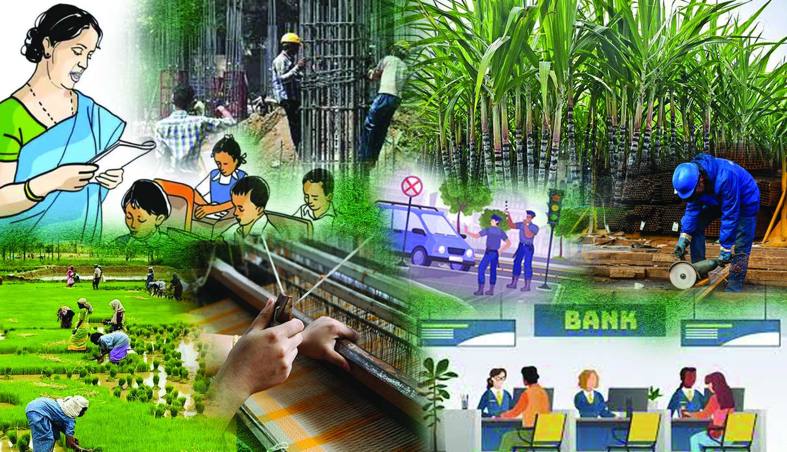
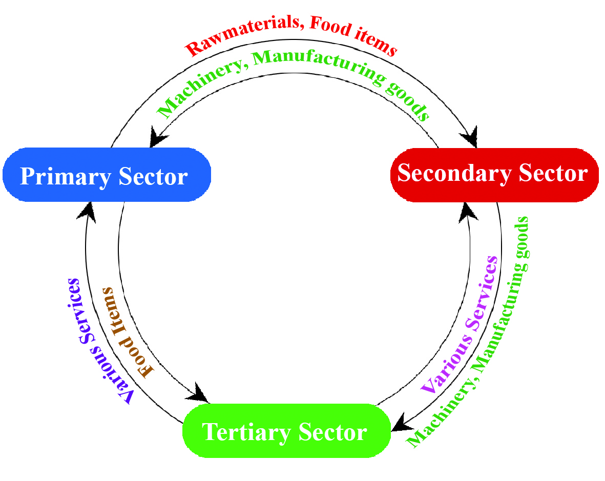

Observe the picture 5.1. Don't you notice people engaged in different
occupations?. Why are they engaged so? Yes, these occupations give
them income. Hence these occupations are part of economic activities.
Indian Economy Through
Various Sectors
5
Fig 5.1
Page 7

Page 8


104
Part II
Social Science II
Categorise the economic activities given in picture 5.1 into
their related sectors.
Agriculture
Industry and Construction
Activities in these three sectors are included in primary,
secondary, and tertiary sectors of the economy.
Primary Sector
The end purpose of the primary
sector includes all those activities
that utilise the natural resources
directly.
Agricultural
activities,
animal husbandry and fishing
which depend on natural resources,
are examples for primary sector
activities.
Since
the
primary
sector gives more importance to
agriculture and allied activities, it
is also known as the Agricultural
sector.
The NSO, which prepares the
economic statistical data of India,
indicates the economic activities
included in each sector of the
economy. Examine the following list of different economic
activities and complete the picture (5.2, 5.3, 5.4).
Hotels and Restaurants
Banking, Insurance
Agriculture and allied
activities
Construction works
Industry
Education
Livestock rearing
Real estate
Health
Water supply
Forestry
Different Economic activities
National Statistical Office (NSO)
National Statistical Office (NSO) was
formed in 2019 by combining the
then existent institutions, Central
Statistical Office (CSO) and National
Sample Survey Office(NSSO).
NSO, as a government of Indian
organization, collects, analyses, and
publishes the economic statistical
data of India, including national
income. This data is utilised to
formulate economic policies, plan
government projects and monitor the
economic growth.
Page 9


105
Standard IX
Indian Economy Through Various Sectors
Complete the diagram related to primary sector.
Quarrying
Fishing
...............................................
Primary Sector
...............................................
...............................................
Mining
Fig 5.2
Are we directly using all the products derived from the
primary sector?
Don't we also use other products that are produced utilising
the primary sector resources?
By examining the completed diagram, you may realise
that from the primary sector we get products which can be
directly consumed and also the raw materials utilised for the
production of other products.
Secondary Sector
This sector includes the economic activities related to industry
and manufacturing. It involves the processing of raw materials
from the primary sector into finished products. Since the
secondary sector gives more importance to the industries, it is
also called the Industrial sector.
Complete the following diagram which includes the various
economic activities related to the secondary sector.
......................................
Electricity, Gas
......................................
......................................
Fig 5.3
Secondary Sector
Page 10


106
Part II
Social Science II
Tertiary Sector
The tertiary sector through its activities make more efficient
the economic activities related to the storing and marketing of
primary and secondary sectors. The tertiary sector also ensures
the services of various fields like health and education. Hence
it is known as the service sector.
We have already seen the categorisation of various economic
activities into the primary, secondary and tertiary sectors. The
economy grows when these three sectors work in tandem.
Let's see an example. How do the other two sectors help to
raise the production of sugarcane in the primary sector?
Complete the diagram related to the tertiary sector.
Transportation
Communication
Trade and
commerce
Tertiary Sector
...........................................
...........................................
...........................................
...........................................
...........................................
Fig 5.4
In order to increase the production of sugarcane
Receivables from the
secondary sector
Receivables from the tertiary
sector
Machinery
Fertilizers
Transportation
Financial assistance
Table 5.1
Page 11



107
Standard IX
Indian Economy Through Various Sectors
Thus, it is the interdependence between the various sectors
that completes the production process.
Find out the interdependence between the various sectors by
analysing the following picture.
Fig 5.5
Analyse the picture and answer the following questions.
Which are the sectors helped by the primary sector? What are
they? Name them.
What are the assistance received by the primary sector from
the other sectors?
How are the primary, secondary and tertiary sectors
mutually related?
Interdependence between the various sectors is essential for
ensuring economic growth. Production, distribution, and
consumption are known as the major economic activities
Page 12


108
Part II
Social Science II
that take place in different sectors. Production is the process
of making goods and services by utilising different factors of
production. Distribution is the process of allocating produced
goods and services or income among different individuals
and factors of production. A part of the income thus allocated
is used by the consumer to purchase goods and services.
The balance is kept as saving. Consumption is the process
of utilising goods and services to satisfy various needs and
wants. An economy prospers when we boost up economic
activities such as production, distribution and consumption.
National Income
Usually we submit the annual household income details to the
authorities as a part of social- economic survey. How do we
calculate the annual household income? Annual household
income is the income derived from different sources such as
salary, other occupations, assets and bank deposits. In the same
way, National Income is the sum total of the income generated
from all the economic activities that have taken place in a year.
Final goods are those that can be consumed directly. A product
that is used as a raw material to produce another product is
known as intermediate goods.
The National Income is the sum total of the money value of all final goods
and services produced in an accounting year. In India, the financial year
commences from 1st April and closes on 31st March.
Page 13

109
Standard IX
Indian Economy Through Various Sectors
Importance of measuring National Income
The income generated from the primary, secondary, and
tertiary sectors is an indicator of the economic growth of a
country. Let's examine the importance of calculating national
income
Can understand the economic growth of the country.
Can assess the contribution of different sectors.
Can help the government plan and implement various
projects.
Can compare the economic status of countries.
Can understand different types of investments and
expenditure of the people.
Can understand the strength and weakness of the
economy.
Methods of measuring National Income
Given below are the three methods we generally adopt for
measuring national income. They are based on production,
income and expenditure.
Product Method
Income Method
Expenditure Method
Product Method
This method calculates national income by adding the value
of all final goods and services produced in the primary,
secondary and tertiary sectors of an economy in a financial
year. This helps us to identify the contributions made by
different sectors towards the National Income and ensure due
apportion to each sector.
Page 14

110
Part II
Social Science II
National Income (NI) = x1 + x2 + x 3+ x4.......... + xn
x1 + x2 + x 3+ x4.......... + xn is the sum total of the money value of
all final goods and services produced in the primary, secondary
and tertiary sectors of an economy.
Income Method
According to the income method, national income is the sum
total of the incomes generated by land, labour, capital and
organisation in the form of rent, wages, interest and profit.
That is, National Income NI = r + w + i + p
r = rent, w = wage, i = interest, p = profit
This method helps us to identify the proportion of income
of each factor in the National Income. By income method, we
are able to calculate the Gross National Income (GNI).
Expenditure Method
In this method, national income is calculated by adding
together all the expenses incurred in the purchase of goods
and services to carry out various economic activities.
In Economics, investment is also considered as expenditure.
This is in addition to the expenditure for the purchase of goods
and services. The total expenditure of the economy includes
government expenditure as well as net export value besides
consumption expenditure and investment expenditure.
Therefore, National Income (NI) = C + I + G + (X-M)
C = Consumption expenditure, I = Investment expenditure
G = Government expenditure,
X-M = Net export where, (X) denotes country's Export and
(M) denotes country's Import.
Page 15


111
Standard IX
Indian Economy Through Various Sectors
In this way, by expenditure
method, we can calculate the
Gross National Expenditure
(GNE).
We are now familiar with the
three methods of measuring
national
income.
Through
product method, we get the
total money value of the various
goods and services produced
in primary, secondary and
tertiary sectors in the country.
Through the income method,
we get the Gross National
Income
and
through
the
expenditure method, we get the
Gross National Expenditure.
We get the same result when
we calculate National Income
by any of these three methods.
It means that the value of
National Income will be one
and the same when we calculate
it by anyone of the three methods, namely product method,
income method or the expenditure method.
Gross Domestic Product (GDP) and Gross National
Product (GNP)
We have already seen how to find out the economic condition
of a nation and its significance. Let's get familiar with some
of the important concepts related to the National Income
calculation.
GDP is the sum total of the money value of all final goods and
services produced within the domestic territory of a country.
'Domestic territory' denotes a region under the jurisdiction
of a national government which has absolute freedom for
performing economic activity. While calculating GDP, the
income received by those who work abroad and the profit
earned by enterprises and institutions abroad are not included.
Government Expenditure
Government
Expenditure
or
public
expenditure is the expenditure incurred for
ensuring the general welfare of the people.
Government Expenditure may be divided
into developmental expenditure and non-
developmental expenditure.
Consumption Expenditure
Consumption Expenditure is the expenditure
incurred by the consumer for the purchase of
different goods and services for consumption.
Investment Expenditure
Investment Expenditure is the expenditure
incurred on capital goods by industrial units,
individuals,
or
institutions.
Expenditure
incurred for the purchase of land and
machinery are some of the examples of
investment expenditure.
Net exports
Net exports is the difference between the
value of exports and the value of imports of
the country.
Page 16


112
Part II
Social Science II
How does GNP differ from GDP?
What is the significance of calculating NNP?
Net National Product - NNP
When we purchase and use a vehicle or machinery, its
efficiency comes down every year. Regular use of any object
leads to wear and tear and makes it obsolete. The expenses
incurred to rectify this wear and tear are called depreciation
cost. Depreciation costs are considered while calculating
national income. When we deduct depreciation from GNP, we
get NNP.
Net National Product (NNP) = GNP - Depreciation cost
Economic Territory of a Country
Economic territory includes
Air space, territorial waters
The embassies and high commissions
situated in other countries.
Zones where a country has exclusive
rights, a part of the sea where it has the
right to fish, collect fuel and minerals from
the seabed.
Free zones of offshore enterprises under
the control of customs.
The embassies and high commissions owned
by foreign countries in India are not included
under our economic territory.
For example; the economic
gain made by an Indian
company abroad will not be
included in the GDP. GDP is
the suitable tool for analysing
the contributions made by
different sectors of an economy
within a country.
India's
GNP
is
calculated
by adding the income of
Indians
and
Indian
firms
abroad to the GDP. At the same
time it excludes the income
earned from India by foreign
national and foreign firms.
Thus, GNP is the sum total of
the money value of all final
goods and services produced
by the residents of a country
within the domestic territory
and abroad.
Page 17


113
Standard IX
Indian Economy Through Various Sectors
Per Capita Income - PCI
Per Capita Income is an essential tool used to understand the
economic condition of an economy.
It is obtained by dividing the national income by the total
population of a country.
Per Capita Income (PCI) =
National Income
Total Population
What will happen to per capita income if the population of a country
increases more than the national income?
Limitations in measuring National Income
Even though the calculation of national income is essential
for understanding the economic condition of a country; this
tremendous effort is beset with a lot of practical difficulties
and limitations. Let's see what they are?
Lack of accurate statistical data
Double counting (The possibility of counting the monetary
value of a product in more than one stages of production)
Non inclusion of goods and services produced for self
consumption.
Not including those products whose monetary value is
not determined in the market.
Value of household work not included.
What happens to the per capita income when the income of
only a small segment of population increases? Discuss the
consequences of such a change and prepare a brief note.
Find out the per capita income of our country and state.
Page 18

114
Part II
Social Science II
In spite of these limitations, NSO tries its level best to calculate
the national income accurately.
While calculating national income, the income generated
by different sectors of an economy has a decisive role in
determining the total income of a country. Hence we have
to empower each and every sector. We have to evaluate the
sector-wise contribution of primary, secondary and tertiary
sectors towards national income. The contribution made by
each sector towards national income not only provides the
performance standards of that sector but also indicates the
interdependence of other sectors.
Sectoral Contribution to India's National Income
From January 2015 onwards, NSO uses the concept of Gross
Value Added to find out the contribution made by different
sectors of the Indian economy. Before that, Gross Domestic
Product was used to find out sectoral contribution. By the
gross value added (GVA) method, the contribution made by
each sector can be calculated in a relatively fast and accurate
way.
Gross Value Added (GVA)
Gross Value Added is the sum total of the value of goods
and services produced in an economy. Gross value added is
calculated by subtracting value of intermediate consumption
from gross product value.
Gross Value Added (GVA) = Gross Product Value - Value of Intermediate Consumption
Intermediate consumption indicates the consumption of raw
materials used to produce a goods or service. While calculating
gross value added, only the product value is considered.
Page 19


115
Standard IX
Indian Economy Through Various Sectors
Tax, Subsidy
Tax is a compulsory payment made by the public to
the government for enabling the latter to meet the
expenses of public interest like welfare measures
and developmental activities.
Subsidy is the financial support or assistance
provided by the government on goods and services
to individuals or institutions on the basis of socio-
economic policies.
Fig 5.6
44%
38%
29%
21%
17%
23%
23%
25%
29%
28%
33%
38%
46%
50%
55%
0%
10%
20%
30%
40%
50%
60%
1982-83
1992-93
2002-03
2012-13
2022-23 (1st AE)
GVA വിഹിതം ശതമാനത്തിൽ
വർഷം
വിവിധ േമഖലകൾ തിരിച്ചƧളള് GVA വിഹിതം
- ജിവിഎ GVA േകാൺസ്റ്റന്റ്˘ ൈര്പസ്
കൃഷിയും അനുബന്ധേമഖലയും
േസവന േമഖല
വയ്വസായ േമഖല
source : Economic survey 2022-2023
Sector-wise contribution of GVA - 1982-83 to 2022-23
(on constant price)
YEAR
Source data from Economic survey 2022 - 2023
GVA Share in Percentage
Agriculture Sector
Industrial Sector
Service Sector
Taxes or subsidies on the
product are not considered.
But while calculating GDP,
the
difference
between
product tax and product
subsidy is added to GVA.
That is,
GDP = GVA + (Product tax - Product subsidy)
Analyse the graph and answer the following questions.
In your opinion, which sector shows a continuous declining trend as
per the above mentioned values of GVA for different periods (1982-83
to 2022-23)
Which sector shows continuous increase in the share of GVA?
Analyse various sectors' GVA share during this period and prepare a
note.
39%
We can understand the GVA value made by primary,
secondary and tertiary sectors in national income for various
periods from the graph given below.
Page 20


116
Part II
Social Science II
Gross State Value Added - GSVA
The GSVA of Kerala and its sectoral contribution shows changes
over time.
Observe the graph given below and analyse the GSVA of Kerala
and the contribution made by its different sectors.
What changes do you observe in GSVA while comparing the
contribution of the primary sector from 2019-20 to 2022-23?
Which sector has made outstanding contribution in GSVA
of Kerala during the period 2022-23?
What changes did you notice in the contribution of the
secondary sector while analysing the graph?
Prepare an analytical note on the contribution of different
sectors to Kerala's GSVA.
Fig 5.7
Sector wise share in GSVA- 2019-20 to 2022-23
(on constant price)
YEAR
Source : Economic Review 2023 Kerala State Planning Board, Thiruvananthapuram
January 2024
GSVA Share in Percentage
Agriculture Sector
Industrial Sector
Service Sector
8.97
10.11
9.39
8.98
26.82
29.43
28
28.4
64.21
60.46
62.61
62.62
0
10
20
30
40
50
60
70
2019-20
2020-21
2021-22 (P)
2022-23 (Q)
* P - provisional Estimate, Q - Quick Estimate
Page 21

117
Standard IX
Indian Economy Through Various Sectors
We have understood that the share of tertiary sector is more
compared to other sectors in GVA of India and GSVA of
Kerala. Let's examine and find out why. The reasons are
Programmes implemented for the development of the
health and education sector.
The growth of the banking and insurance sector facilitating
the country's trade and commerce.
Growth of transport and communication sector
Tourism development
Growth of knowledge-based industries
All these factors contribute to the growth in the sectoral
contribution of the tertiary sector towards GVA.
Growth of Knowledge-based Sector
Human capital refers to the individual traits that are useful in
the production process. This includes knowledge, skills, health
and education of human resources. Knowledge-based sector
effectively utilises knowledge and technology for attaining
economic growth. Today, the modern technology and ICT
possibilities have elevated the nation into a knowledge
economy. Now a days knowledge-based services, as part of
the tertiary sector, have momentum. Indian information and
communication technology has
grown to such an extent that
it even provides the software
services in the international level.
It opens up a great opportunity
and possibility for the younger
population of India below 35
years, which amounts to 65% of
India's total population. Under
these circumstances, and as a
result of knowledge explosion,
it will be possible for India to
achieve economic progress and
improve social welfare.
Fig 5.8
Page 22

118
Part II
Social Science II
The Government has given priority to the development of
knowledge- based sectors. The Technopark and Infopark established
by the government of Kerala are the best examples for this.
There exists a congenial atmosphere for nourishing the knowledge-
based sectors in the present day India. Mass of people who can handle
foreign languages with ease, improved scientific and technological
growth, extensive government-cooperative-private sectors, the
ever evolving markets which grow day by day-all these helping
the development of a knowledge-based sector and to enhance the
contribution of the tertiary sector in national income.
Employment structure in various sectors
We have seen from the graph given in the picture 5.6 that the
service sector has contributed the most to India's national income
during 2022-23. There are disparities in the occupational structure
in different sectors of the Indian economy. Observe the graph
given below (Fig 5.9).
The knowledge-based sector plays an important role in
strengthening the tertiary sector. Evaluate the statement.
0
10
20
30
40
50
60
70
80
1991
2001
2011
2019-20
66.8
12.7
20.5
56.7
18.2 25.1
48.9
24.4 26.7
43.5
24.19
32.36
Primary Sector
Secondary sector
Tertiary sector
Source: Indian Economy 2ndEdition, Madhur. M. Mahajan
Fig 5.9
India's Occupational Structure - 1991 to 2019-20
(in percentage)
Occupational Structure in Percentage
YEAR
Page 23


119
Standard IX
Indian Economy Through Various Sectors
Based on the following questions, examine the above graph
which explains occupational structures in various sectors of the
economy. Record your findings.
Which sector comprises the largest volume of labourers
during the period 1991 to 2019-20?
What are the changes that can be noted in the occupational
structure of secondary and tertiary sectors during this period?
Analyse the graph (Fig 5.9) and prepare a brief note on
employment structures of the various sectors in Indian
economy.
During the different phases of economic growth, we may
notice a change in the relative importance of different sectors.
This is referred to as structural transformation. It implies a
change in the contribution made by different sectors and their
employment opportunities.
Organised and Unorganised Sectors
The employment sector can be divided into two as organised
and unorganised sectors. The organised sector includes various
enterprises and activities that function under a proper legal
system, assure a safe working atmosphere for labourers and
protects their rights. The firms under this employment sector
are registered under companies act, factory law, societies
act or co-operative act and function under these laws. The
employment units under the organised sector are bound to
obey the rules stipulated in the law under which they have
been registered.
The enterprises under the unorganised sector are neither
under any proper legal system nor do they keep any proper
accounts.
Page 24


120
Part II
Social Science II
Complete the table by finding more features of organised and
unorganised sectors.
Organised Sector
Unorganised Sector
Registered employment sector
Permanent jobs ensured
Comparatively high salary
Job security
Unregistered employment sector
No assurance of permanent job
Comparatively low salary
Lack of job security
Problems faced by the unorganised sector
The workers of unorganised sector face many problems like
unsafe work places, long working hours, and low wages.
This hinders the transformation of such employees into
excellent human capital. Apart from this, it leads to their
lower contribution to national income and widens the socio-
economic inequality. Compared to those in the organised
sector, the employees in the unorganised sector face many
problems such as backwardness and lack of opportunities.
This leads to a different types of inequality. The central and
state governments have passed various laws to mitigate these
problems. Let's familiarise with some important laws among
them.
The Unorganised Worker's Social Security Act - 2008
This law empowers the central and state governments
to implement various policies to ensure healthcare of
unorganised workers, maternity benefits, old age protection,
education, housing and various social security benefits.
They are employment sectors that exist informally and do not
submit to any specific registration or code of law.
Page 25


121
Standard IX
Indian Economy Through Various Sectors
The Code on Social Security 2020
The Code on Social Security 2020 was formed in 2020 by giving
importance to the measures that ensure social security of the
employees under organised and unorganised sectors. This law
confers various benefits on the self-employed, housekeepers,
daily wage workers, workers from other states, and gig
platform workers. Various grants given to physically and
mentally challenged workers, accident insurance, maternity
benefit, free medical benefits and old age protection come
under the ambit of this law.
Apart from these laws, various programmes have been
implemented
by
the
government
to
strengthen
the
unorganised sector such as developing the skills of the
workers, making available loans and liberalising the labour
laws.
Gig Platform Workers
Code on Social Security 2020 defines
a gig platform worker as 'a worker
who works outside the conventional
employer - employee relationship and
earns money from it'.
Features
Gig platform workers engage
formal contracts with companies
when needed.
The jobs are temporary and must
be completed in a time bound manner.
They can work in more than one establishment simultaneously.
They have the freedom to work according to time and situation.
Opportunities are provided to test their talent in the areas of their interest.
Gig platform workers have become a major work force of the modern economy.
Freelancers, independent contractors, various online food distribution workers,
drivers, etc. are the examples for gig platform workers.
Page 26


122
Part II
Social Science II
The growth of primary, secondary and tertiary sectors of an
economy plays a vital role in the development of that country.
The growth of national income, which ultimately determines
the growth of a nation, depends in turn on the mutual
relationships among the primary, secondary and tertiary
sectors.
1. Prepare
a
chart
containing
various
examples
of
interdependence among primary, secondary and tertiary
sectors which are seen around you. Present it in the class.
2. Find out goods that can be used as final goods and
intermediate goods at the same time. Prepare a list.
3. List out the problems faced by the unorganised sector
workers in your area and suggest some remedial measures.
4. Conduct a discussion on how a growth in the unorganised
sector confers various benefits on the economy and present
the report of the same.
5. Find out and prepare notes on policies and programmes
that are implemented by the state-central governments to
minimise the inequalities that exist in health, education,
and employment sectors.
Extended Activities